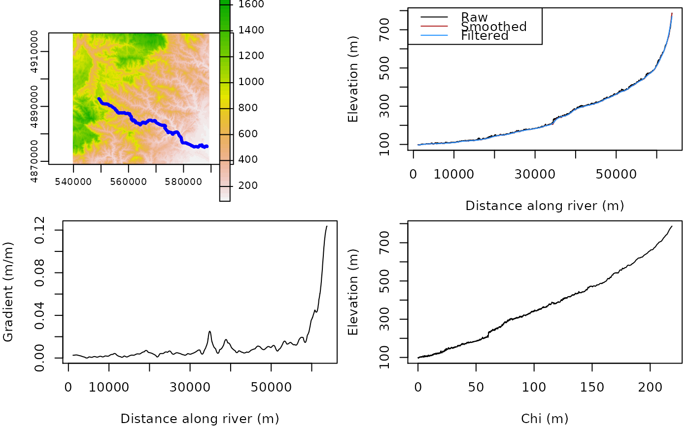

profile_smooth.RdSmooth channel profile by removing artifacts
profile_smooth(distance, elevation, span, radius)
| distance | distance along channel network (m) |
|---|---|
| elevation | elevation along channel network (m) |
| span | span parameter for the loess fit used to detrend the profile (fraction of the total points used for the local fits) |
| radius | radius of the rolling circle used to smooth the profile (m) |
a vector (same length as the inputs) with corrected elevation values along the river
# get river data # see DEM processing vignette for example of the extraction of such data from a DEM data("rivers_cevennes",package = "gtbox") # get DEM (for plotting) data("dem_cevennes",package = "gtbox") dem = rast(dem_cevennes) rm(dem_cevennes) df = rivers_cevennes[rivers_cevennes$river==1,] # select a river df = df[order(df$dist),] # order data according to distance along river df$area = df$acc*30^2 # compute drainage area df$chi = profile_chi(df$area,df$dist,aref=1000,mn=0.5) # compute chi df$z2 = profile_smooth(df$dist,df$z,span=0.1,radius=10e3) # smooth profile df$z3 = profile_gaussian(df$dist,df$z2,span=0.1,sigma=500) # filter profile df$gradient = profile_gradient(df$dist,df$z3,window=200) # compute gradient par(mfrow=c(2,2)) plot(dem) lines(df$x,df$y,lwd=3,col="blue") par(mar = c(4,4,0.5,0.5)) plot(df$dist,df$z,type="l",xlab="Distance along river (m)",ylab="Elevation (m)") lines(df$dist,df$z2,col="firebrick") lines(df$dist,df$z3,col="dodgerblue") legend("topleft",c("Raw","Smoothed","Filtered"),lty=1,col=c("black","firebrick","dodgerblue")) plot(df$dist,df$gradient,type="l",xlab="Distance along river (m)",ylab="Gradient (m/m)") plot(df$chi,df$z,type="l",xlab="Chi (m)",ylab="Elevation (m)")